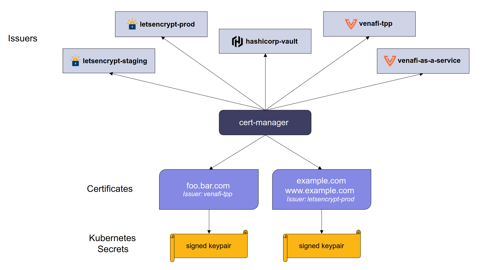

2 deploy aws alb ingress controller
Deploy AWS Load Balancer Controller
Let’s deploy the AWS ALB Ingress controller into our EKS cluster using the steps below.
Prerequisite
Note: Make sure that you've IAM OIDC provider associated with cluster. If not, kindly refer to cluster.md at Step 2: Creating an IAM OIDC provider for your cluster.**
Create Service Account with IAM Role & Permissions for the AWS Load Balancer Controller
-
Create an IAM policy named
AWSLoadBalancerControllerIAMPolicyto allow the ALB Ingress controller to make AWS API calls on your behalfaws iam create-policy \ --policy-name AWSLoadBalancerControllerIAMPolicy \ --policy-document https://raw.githubusercontent.com/kubernetes-sigs/aws-load-balancer-controller/main/docs/install/iam_policy.json # If you want specific version: https://raw.githubusercontent.com/kubernetes-sigs/aws-load-balancer-controller/v2.3.1/docs/install/iam_policy.jsonRecord the// Output { "Policy": { "PolicyName": "AWSLoadBalancerControllerIAMPolicy", "PermissionsBoundaryUsageCount": 0, "CreateDate": "2023-01-13T07:40:01Z", "AttachmentCount": 0, "IsAttachable": true, "PolicyId": "ANPAXE26SPP7QVXKG6HOK", "DefaultVersionId": "v1", "Path": "/", "Arn": "arn:aws:iam::491435228159:policy/AWSLoadBalancerControllerIAMPolicy", "UpdateDate": "2023-01-13T07:40:01Z" } }Policy.Arnin the command output, you will need it in the next step -
Create a
Kubernetes service accountand anIAM role(for the pod running the AWS ALB Ingress controller) by substituting$PolicyARNwith the recorded value from the previous step: ```bash eksctl create iamserviceaccount \ --cluster=app-cluster \ --namespace=kube-system \ --name=aws-load-balancer-controller \ --role-name=AWSLoadBalancerControllerIAMRole \ --attach-policy-arn=arn:aws:iam::491435228159:policy/AWSLoadBalancerControllerIAMPolicy \ --override-existing-serviceaccounts \ --approve \ --tags "Project=Cap Build,Topic=EKS"```bash # Output 2023-01-19 17:55:14 [ℹ] 1 iamserviceaccount (kube-system/aws-load-balancer-controller) was included (based on the include/exclude rules) 2023-01-19 17:55:14 [!] metadata of serviceaccounts that exist in Kubernetes will be updated, as --override-existing-serviceaccounts was set 2023-01-19 17:55:14 [ℹ] 1 task: { 2 sequential sub-tasks: { create IAM role for serviceaccount "kube-system/aws-load-balancer-controller", create serviceaccount "kube-system/aws-load-balancer-controller", } }2023-01-19 17:55:14 [ℹ] building iamserviceaccount stack "eksctl-app-cluster-addon-iamserviceaccount-kube-system-aws-load-balancer-controller" 2023-01-19 17:55:14 [ℹ] deploying stack "eksctl-app-cluster-addon-iamserviceaccount-kube-system-aws-load-balancer-controller" 2023-01-19 17:55:14 [ℹ] waiting for CloudFormation stack "eksctl-app-cluster-addon-iamserviceaccount-kube-system-aws-load-balancer-controller" 2023-01-19 17:55:45 [ℹ] waiting for CloudFormation stack "eksctl-app-cluster-addon-iamserviceaccount-kube-system-aws-load-balancer-controller" 2023-01-19 17:56:42 [ℹ] waiting for CloudFormation stack "eksctl-app-cluster-addon-iamserviceaccount-kube-system-aws-load-balancer-controller" 2023-01-19 17:56:43 [ℹ] created serviceaccount "kube-system/aws-load-balancer-controller"Verify k8s Service Account using kubectl.
Deploy the AWS Load Balancer Controller
-
Install cert-manager so that you can inject the certificate configuration into the webhooks.
cert-manager adds certificates and certificate issuers as resource types in Kubernetes clusters, and simplifies the process of obtaining, renewing and using those certificates.

For the# Template kubectl apply --validate=false -f https://github.com/jetstack/cert-manager/releases/download/$VERSION/cert-manager.yaml$VERSION, you can refer to this link for the available version. For this tutorial, we'll usev1.11.0.kubectl apply --validate=false -f https://github.com/jetstack/cert-manager/releases/download/v1.11.0/cert-manager.yaml# Output namespace/cert-manager created customresourcedefinition.apiextensions.k8s.io/clusterissuers.cert-manager.io created customresourcedefinition.apiextensions.k8s.io/challenges.acme.cert-manager.io created customresourcedefinition.apiextensions.k8s.io/certificaterequests.cert-manager.io created customresourcedefinition.apiextensions.k8s.io/issuers.cert-manager.io created customresourcedefinition.apiextensions.k8s.io/certificates.cert-manager.io created customresourcedefinition.apiextensions.k8s.io/orders.acme.cert-manager.io created serviceaccount/cert-manager-cainjector created serviceaccount/cert-manager created serviceaccount/cert-manager-webhook created configmap/cert-manager-webhook created clusterrole.rbac.authorization.k8s.io/cert-manager-cainjector created clusterrole.rbac.authorization.k8s.io/cert-manager-controller-issuers created clusterrole.rbac.authorization.k8s.io/cert-manager-controller-clusterissuers created clusterrole.rbac.authorization.k8s.io/cert-manager-controller-certificates created clusterrole.rbac.authorization.k8s.io/cert-manager-controller-orders created clusterrole.rbac.authorization.k8s.io/cert-manager-controller-challenges created clusterrole.rbac.authorization.k8s.io/cert-manager-controller-ingress-shim created clusterrole.rbac.authorization.k8s.io/cert-manager-view created clusterrole.rbac.authorization.k8s.io/cert-manager-edit created clusterrole.rbac.authorization.k8s.io/cert-manager-controller-approve:cert-manager-io created clusterrole.rbac.authorization.k8s.io/cert-manager-controller-certificatesigningrequests created clusterrole.rbac.authorization.k8s.io/cert-manager-webhook:subjectaccessreviews created clusterrolebinding.rbac.authorization.k8s.io/cert-manager-cainjector created clusterrolebinding.rbac.authorization.k8s.io/cert-manager-controller-issuers created clusterrolebinding.rbac.authorization.k8s.io/cert-manager-controller-clusterissuers created clusterrolebinding.rbac.authorization.k8s.io/cert-manager-controller-certificates created clusterrolebinding.rbac.authorization.k8s.io/cert-manager-controller-orders created clusterrolebinding.rbac.authorization.k8s.io/cert-manager-controller-challenges created clusterrolebinding.rbac.authorization.k8s.io/cert-manager-controller-ingress-shim created clusterrolebinding.rbac.authorization.k8s.io/cert-manager-controller-approve:cert-manager-io created clusterrolebinding.rbac.authorization.k8s.io/cert-manager-controller-certificatesigningrequests created clusterrolebinding.rbac.authorization.k8s.io/cert-manager-webhook:subjectaccessreviews created role.rbac.authorization.k8s.io/cert-manager-cainjector:leaderelection created role.rbac.authorization.k8s.io/cert-manager:leaderelection created role.rbac.authorization.k8s.io/cert-manager-webhook:dynamic-serving created rolebinding.rbac.authorization.k8s.io/cert-manager-cainjector:leaderelection created rolebinding.rbac.authorization.k8s.io/cert-manager:leaderelection created rolebinding.rbac.authorization.k8s.io/cert-manager-webhook:dynamic-serving created service/cert-manager created service/cert-manager-webhook created deployment.apps/cert-manager-cainjector created deployment.apps/cert-manager created deployment.apps/cert-manager-webhook created mutatingwebhookconfiguration.admissionregistration.k8s.io/cert-manager-webhook created validatingwebhookconfiguration.admissionregistration.k8s.io/cert-manager-webhook created -
Download the manifest file for the AWS Load Balancer Controller from AWS GitHub, run the following command:
For this tutorial, we'll use# Template curl -Lo ingress-controller.yaml https://github.com/kubernetes-sigs/aws-load-balancer-controller/releases/download/$VERSION/v2_4_1_full.yamlv2.4.6version. Change the$VERSIONandv2_4_1_full.yaml based on version.bash # Will download the content and save it to `ingress-controller.yaml` curl -Lo ingress-controller.yaml https://github.com/kubernetes-sigs/aws-load-balancer-controller/releases/download/v2.4.6/v2_4_6_full.yaml - Update the following
ingress-controller.yamlinformation.- Edit the cluster-name for your cluster. Search for
your-cluster-nameand replace it with the name of cluster. - Update only the
ServiceAccountsection of the file only.apiVersion: v1 kind: ServiceAccount metadata: labels: app.kubernetes.io/component: controller app.kubernetes.io/name: aws-load-balancer-controller # Add the annotations line, # so it won't override the created IAM role in the 1st step. annotations: eks.amazonaws.com/role-arn: arn:aws:iam::491435228159:role/AWSLoadBalancerControllerIAMRole name: aws-load-balancer-controller namespace: kube-system
- Edit the cluster-name for your cluster. Search for
-
Deploy AWS Load Balancer Controller
# Output customresourcedefinition.apiextensions.k8s.io/ingressclassparams.elbv2.k8s.aws created customresourcedefinition.apiextensions.k8s.io/targetgroupbindings.elbv2.k8s.aws created Warning: resource serviceaccounts/aws-load-balancer-controller is missing the kubectl.kubernetes.io/last-applied-configuration annotation which is required by kubectl apply. kubectl apply should only be used on resources created declaratively by either kubectl create --save-config or kubectl apply. The missing annotation will be patched automatically. serviceaccount/aws-load-balancer-controller configured role.rbac.authorization.k8s.io/aws-load-balancer-controller-leader-election-role created clusterrole.rbac.authorization.k8s.io/aws-load-balancer-controller-role created rolebinding.rbac.authorization.k8s.io/aws-load-balancer-controller-leader-election-rolebinding created clusterrolebinding.rbac.authorization.k8s.io/aws-load-balancer-controller-rolebinding created service/aws-load-balancer-webhook-service created deployment.apps/aws-load-balancer-controller created certificate.cert-manager.io/aws-load-balancer-serving-cert created issuer.cert-manager.io/aws-load-balancer-selfsigned-issuer created mutatingwebhookconfiguration.admissionregistration.k8s.io/aws-load-balancer-webhook created validatingwebhookconfiguration.admissionregistration.k8s.io/aws-load-balancer-webhook created ingressclass.networking.k8s.io/alb created -
Verify that the aws load controller is installed:
# Output Name: aws-load-balancer-controller Namespace: kube-system CreationTimestamp: Thu, 19 Jan 2023 18:34:28 +0800 Labels: app.kubernetes.io/component=controller app.kubernetes.io/name=aws-load-balancer-controller Annotations: deployment.kubernetes.io/revision: 1 Selector: app.kubernetes.io/component=controller,app.kubernetes.io/name=aws-load-balancer-controller Replicas: 1 desired | 1 updated | 1 total | 1 available | 0 unavailable StrategyType: RollingUpdate MinReadySeconds: 0 RollingUpdateStrategy: 25% max unavailable, 25% max surge Pod Template: Labels: app.kubernetes.io/component=controller app.kubernetes.io/name=aws-load-balancer-controller Service Account: aws-load-balancer-controller Containers: controller: Image: public.ecr.aws/eks/aws-load-balancer-controller:v2.4.6 Port: 9443/TCP Host Port: 0/TCP Args: --cluster-name=your-cluster-name --ingress-class=alb Limits: cpu: 200m memory: 500Mi Requests: cpu: 100m memory: 200Mi Liveness: http-get http://:61779/healthz delay=30s timeout=10s period=10s #success=1 #failure=2 Environment: <none> Mounts: /tmp/k8s-webhook-server/serving-certs from cert (ro) Volumes: cert: Type: Secret (a volume populated by a Secret) SecretName: aws-load-balancer-webhook-tls Optional: false Priority Class Name: system-cluster-critical Conditions: Type Status Reason ---- ------ ------ Available True MinimumReplicasAvailable Progressing True NewReplicaSetAvailable OldReplicaSets: <none> NewReplicaSet: aws-load-balancer-controller-7858ff68b9 (1/1 replicas created) Events: Type Reason Age From Message ---- ------ ---- ---- ------- Normal ScalingReplicaSet 3m32s deployment-controller Scaled up replica set aws-load-balancer-controller-7858ff68b9 to 1 -
Verify AWS Load Balancer Controller Webhook service created
-
Verify AWS Load Balancer Controller Logs
# List Pods kubectl get pods -n kube-system | grep aws-load-balancer-controller # Output aws-load-balancer-controller-7858ff68b9-njdw5 1/1 Running 0 5m27s# Output {"level":"info","ts":1673596695.9520242,"msg":"version","GitVersion":"v2.4.6","GitCommit":"a92e689dfe464f5b24784f398947e0fef31dc470","BuildDate":"2023-01-12T06:29:16+0000"} {"level":"info","ts":1673596695.9800384,"logger":"controller-runtime.metrics","msg":"metrics server is starting to listen","addr":":8080"} {"level":"info","ts":1673596695.984325,"logger":"setup","msg":"adding health check for controller"} {"level":"info","ts":1673596695.9844737,"logger":"controller-runtime.webhook","msg":"registering webhook","path":"/mutate-v1-pod"} {"level":"info","ts":1673596695.9845953,"logger":"controller-runtime.webhook","msg":"registering webhook","path":"/mutate-elbv2-k8s-aws-v1beta1-targetgroupbinding"} {"level":"info","ts":1673596695.9847312,"logger":"controller-runtime.webhook","msg":"registering webhook","path":"/validate-elbv2-k8s-aws-v1beta1-targetgroupbinding"} {"level":"info","ts":1673596695.9850075,"logger":"controller-runtime.webhook","msg":"registering webhook","path":"/validate-networking-v1-ingress"} {"level":"info","ts":1673596695.9851177,"logger":"setup","msg":"starting podInfo repo"} I0113 07:58:17.985462 1 leaderelection.go:243] attempting to acquire leader lease kube-system/aws-load-balancer-controller-leader... {"level":"info","ts":1673596697.9858274,"msg":"starting metrics server","path":"/metrics"} {"level":"info","ts":1673596697.9858983,"logger":"controller-runtime.webhook.webhooks","msg":"starting webhook server"} {"level":"info","ts":1673596697.9862094,"logger":"controller-runtime.certwatcher","msg":"Updated current TLS certificate"} {"level":"info","ts":1673596697.9862907,"logger":"controller-runtime.webhook","msg":"serving webhook server","host":"","port":9443} {"level":"info","ts":1673596697.986575,"logger":"controller-runtime.certwatcher","msg":"Starting certificate watcher"}
Deploy a sample application to test the AWS Load Balancer Controller
Deploy a sample application to verify that the AWS Load Balancer Controller creates a public Application Load Balancer because of the Ingress object.
- To deploy a game called 2048 as a sample application, run the following command:
Note: Replace
kubectl apply -f https://raw.githubusercontent.com/kubernetes-sigs/aws-load-balancer-controller/$VERSION/docs/examples/2048/2048_full.yaml$VERSIONwith the version (from the Kubernetes SIGs GitHub site for examplev2.4.6) of the AWS Load Balancer Controller that you want to deploy. - To verify that the Ingress resource was created, wait a few minutes, and then run the following command:
- If your Ingress isn't created after several minutes, then run the following command to view the AWS Load Balancer Controller logs:
Note: AWS Load Balancer Controller logs can show error messages to help you troubleshoot issues with your deployment.
Uninstall all resources created.
- Clean up the sample application
- Remove AWS Load Balancer Controller
- Remove Cert Manager
- Delete K8s IAM Service account
- Delete IAM Policy. Don't forget to change AWS ACCOUNT ID:
491435228159.
References:
- https://aws.amazon.com/premiumsupport/knowledge-center/eks-alb-ingress-controller-setup/